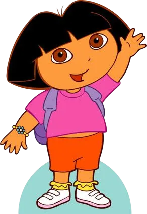
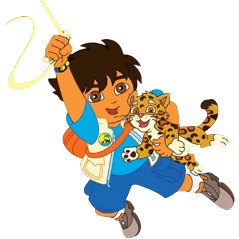
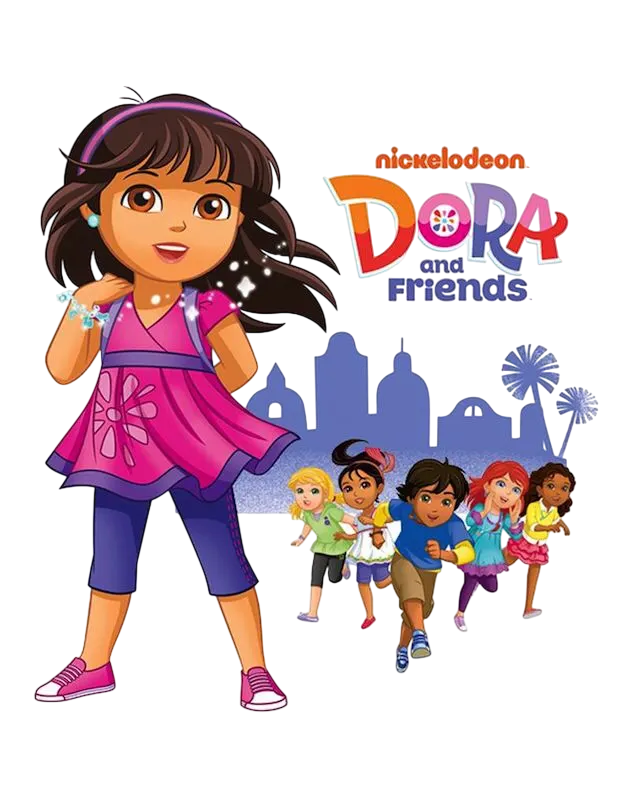
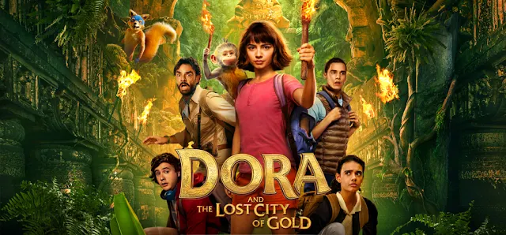

Sobre o Universo Expandido
O sucesso estrondoso de Dora, a Aventureira abriu portas para a criação de um universo compartilhado rico e educativo. Ao longo dos anos, a franquia expandiu-se para além da série original com novas animações focadas em diferentes faixas etárias, propostas pedagógicas atualizadas e até mesmo grandes produções cinematográficas que deram vida nova aos personagens clássicos.

Go, Diego, Go! (2005–2011)
Como primeiro spin-off oficial da franquia, esta série tem como protagonista Diego Márquez, o primo carnal de Dora. Criada para enfatizar temas ligados à natureza, ecologia e ao meio ambiente, a animação apresenta Diego como um jovem socorrista da vida selvagem, determinado a proteger espécies que correm perigo na floresta.
A dinâmica do programa envolve ativamente os espectadores de casa, que participam ajudando Diego a resolver desafios pedagógicos e interativos em cada missão de resgate de animais em apuros. Através dessas aventuras, o público infantil aprende de forma lúdica sobre os nomes dos animais, seus habitats e suas características biológicas básicas.
O elenco de apoio traz personagens recorrentes adorados, como o filhote Baby Jaguar, sua irmã mais velha Alicia, a câmera Click e o Rescue Pack (sua mochila de resgate). Além disso, a própria Dora faz aparições ocasionais em episódios especiais para ajudar seu primo.
Especial: Diego's African Safari (2008)
Neste especial televisivo de longa duração derivado diretamente de Go, Diego, Go!, a aventura expande seus horizontes internacionais. Diego viaja para o continente africano com o objetivo de salvar animais selvagens locais e proteger a rica fauna da savana contra perigos iminentes.

Dora e Seus Amigos: Na Cidade (2014–2017)
Esta sequência direta apresenta uma nova fase na vida da nossa exploradora favorita: agora, Dora cresceu, tem 10 anos de idade e mudou-se para a cidade fictícia de Playa Verde. Frequentando a escola local, ela vive aventuras urbanas ao lado de um grupo inédito de amigos composto por Emma, Kate, Naiya, Alana e Pablo.
A evolução da franquia reflete-se tanto nos temas quanto na tecnologia. A dinâmica de aprendizado foca mais no trabalho em equipe, na resolução de problemas comunitários e no serviço social (mantendo o bilinguismo tradicional). Além disso, modernizando a jornada, Dora deixa de lado o clássico mapa de papel e passa a utilizar um aplicativo de mapas em seu smartphone mágico para se guiar pelas ruas da cidade.

Dora e a Cidade Perdida (Filme - 2019)
A franquia deu um grande salto para as telonas com o lançamento de um longa-metragem no formato live-action (com atores reais). A história acompanha Dora já na adolescência, enfrentando o seu desafio mais intimidador até então: adaptar-se ao ensino médio em uma cidade grande após anos explorando a selva.
A trama acelera quando ela se vê envolvida em uma missão real e perigosa para salvar seus pais desaparecidos, o que a leva a desvendar os mistérios por trás de uma antiga civilização inca perdida. O filme equilibra a ação real com elementos clássicos da animação, trazendo versões computadorizadas tridimensionais (CGI) de personagens queridos como o macaco Botas e o astuto Raposo.